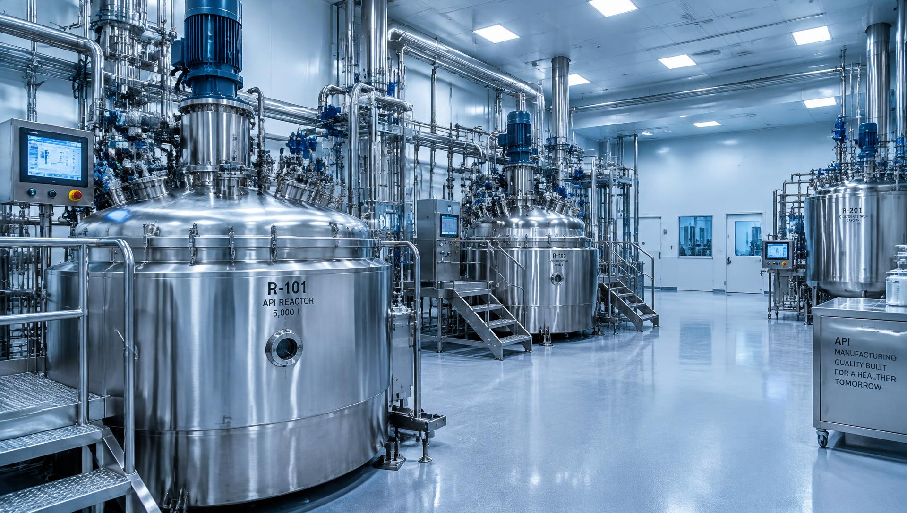

01
Pharmaceutical Manufacturing
A focus on the processes and technical disciplines associated with pharmaceutical manufacturing.

Metrochem Pvt Ltd · Visakhapatnam
Discover Metrochem's pharmaceutical manufacturing identity, technical focus, and commitment to responsible, quality-oriented operations.
About Metrochem
Metrochem Pvt Ltd is presented as a pharmaceutical manufacturing business focused on the importance of scientific expertise, manufacturing discipline, and quality-oriented processes. This website introduces the company's industry focus, manufacturing identity, and commitment to professional business relationships.
Scientific Approach
Manufacturing Focus
Quality-Oriented Mindset
Capabilities
A focus on the processes and technical disciplines associated with pharmaceutical manufacturing.
An introduction to the API manufacturing sector and its role in pharmaceutical production.
The importance of process understanding, optimization, and manufacturing consistency.
The role of documentation, process discipline, and quality-oriented practices in pharmaceutical manufacturing.
Quality
In pharmaceutical manufacturing, quality depends on scientific discipline, suitable process controls, reliable analytical methods, accurate documentation, and continuous improvement.
Manufacturing
Pharmaceutical manufacturing requires attention to process consistency, technical understanding, operational discipline, and responsible industrial practices.
Process Understanding
→Manufacturing
→Quality Evaluation
→Continuous Improvement
General illustration of pharmaceutical manufacturing stages — not a description of Metrochem's specific production process.
Why Metrochem
Grounding decisions in chemistry, data, and technical understanding.
Treating quality as an integral part of every stage of work.
Valuing consistency, documentation, and well-defined procedures.
Building clear, responsible, and long-term business relationships.
Contact
For business inquiries and further information, please get in touch with our team.